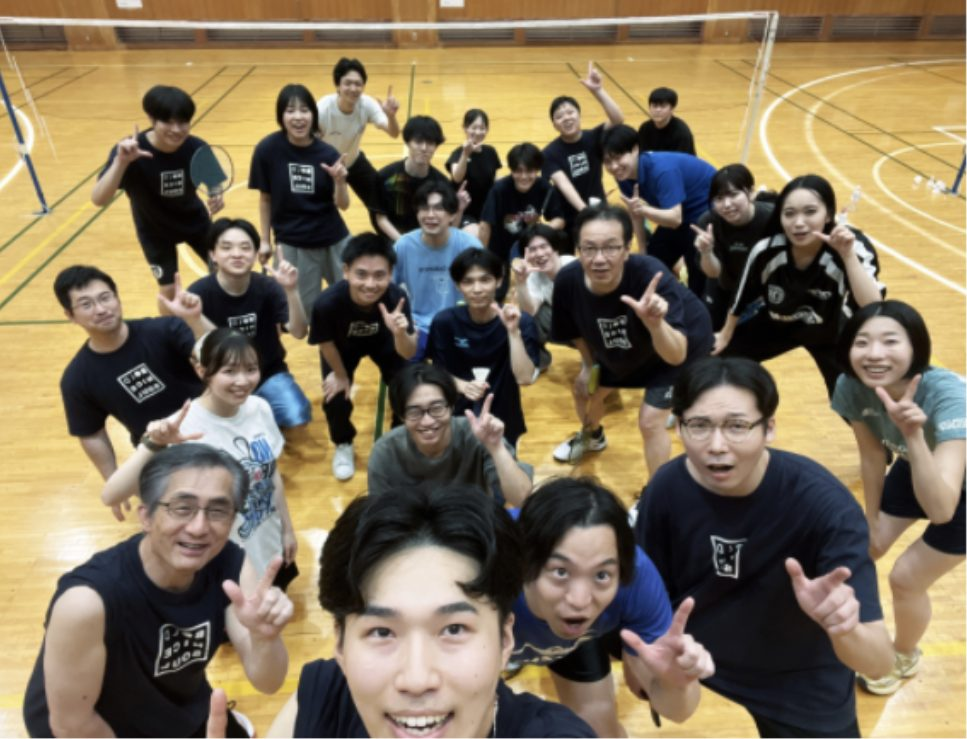
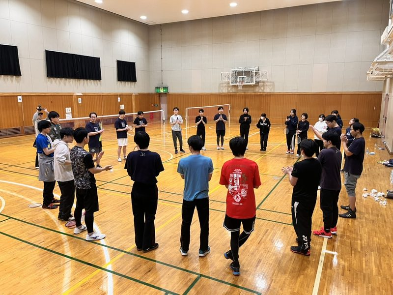

月1回ほど、都内や川崎の体育館を借りて活動しています。現場が違うと普段は顔を合わせないので、ここで初めて話す人も多いです。とりあえず知り合いを増やしたい、という理由での参加も歓迎です。
何年もラケットを持っていない、という人もよく来ます。ラケットは貸し出すので、動きやすい服（ナイスォーTシャツでも大丈夫です）と室内シューズ、タオルがあれば来られます。室内シューズは、外履きの裏を拭いたものでも大丈夫です。参加費は1,000円前後。終わったあとの懇親会も、参加は自由です。

